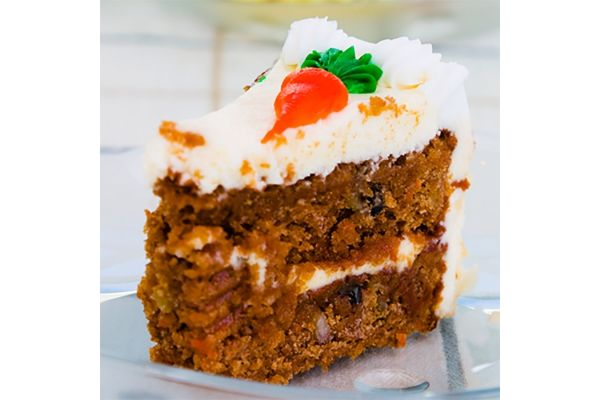

Carrot Cake

Making mouth watering carrot cake
Carrot cake is a moist, sweet cake that is made with grated carrots, flour, sugar, and eggs.
It is typically flavored with spices such as cinnamon and nutmeg, and may also contain nuts and raisins.
The cake is often topped with a cream cheese frosting, which gives it a rich and tangy flavor.
Some variations of carrot cake may also include ingredients such as pineapple, coconut, or walnuts.
Carrot cake is a popular dessert that is often served at celebrations and holidays, and is loved by people of all ages.
Ingredients
- All-purpose flour
- Baking powder
- Baking soda
- Salt
- Ground cinnamon
- Ground nutmeg
- Granulated sugar
- Brown sugar
- Vegetable oil
- Eggs
- Vanilla extract
- Grated carrots
- Chopped nuts (optional)
- Raisins (optional)
- Cream cheese
- Butter
- Powdered sugar
- Vanilla extract
Steps
- Preheat your oven to 350°F (180°C).
- In a medium bowl, whisk together the flour, baking powder, baking soda, salt, cinnamon, and nutmeg.
- In a separate large bowl, beat together the granulated sugar, brown sugar, vegetable oil, eggs, and vanilla extract until well combined.
- Stir in the grated carrots and any nuts or raisins that you are using.
- Gradually add the dry ingredients to the wet ingredients and mix until just combined.
- Pour the batter into a greased 9x13-inch cake pan and smooth the top with a spatula.
- Bake the cake for 30-35 minutes, or until a toothpick inserted into the center comes out clean.
- Remove the cake from the oven and let it cool completely.
- In a medium bowl, beat together the cream cheese, butter, powdered sugar, and vanilla extract until smooth.
- Spread the frosting over the top of the cooled cake.
- Serve the cake and enjoy!